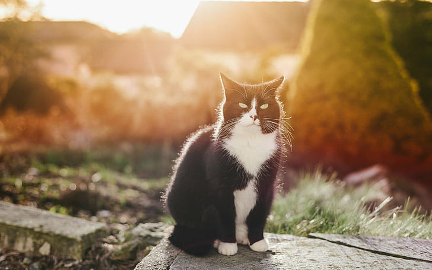

ONG - AYUDA A UN PELUDO
Ayuda a un peludo está encargada del rescate de animales de
compañía que se encuentran en condición de abandono.
Nace como la consolidación de un equipo formado por personas que venían trabajando
desde hace tiempo en el rescate,
principalmente de perros y gatos, y en la generación de políticas educativas de tenencia responsable.
Nuestros integrantes:
Nuestras secciones de ayuda:
